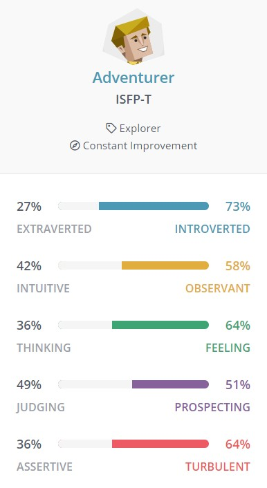

What is your interest in IT?
My main interest in IT is the programming and troubleshooting side. Solving my own, or other people's, problems is something I quite enjoy. The satisfaction of creating solutions has motivated me to pursue this degree in the hopes of doing it as my job one day.
Was there a particular event or person that sparked your interest?
My father is a graphic designer, my uncle is an animator, and many friends and relatives are avid gamers. Growing up with this exposure to technology got me invested in it from early. Throughout school, I had a passion for any and all STEM classes which also helped me discover and explore my interests.
Why did you choose to come to RMIT?
I chose to study with RMIT Online because I was searching for a technology related degree on OUA, and the only ones that really caught my interest were Bachelor of Data Science and Bachelor of Information Technology. After doing some research into the subjects in each course, I determined that the Bachelor of IT taught a wide variety of skills that could help me in whichever field I ended up wanting to pursue.
What do you expect to learn during your studies?
By the end of the degree, I expect to have a solid understanding of various technological avenues. I hope the skills and knowledge accrued set me up nicely for my future career, wherever that takes me.
DevOps Engineer
Description
This job involves overseeing the various technologies ConsenSys employs and ensuring the best
DevSecOps (development, security, and operations) practices are implemented across the organisation.
Development and maintenance of software to optimise productivity in all facets of the business is
another primary responsibility. This job appeals to me because it:
- Works heavily with cloud computing using AWS/Azure, something that I find intriguing.
- Involves scripting in languages I enjoy or already want to learn such as Python and NodeJS.
- Is entirely remote; ConsenSys has a team from all over the world as well as offices in major world cities.
- Focuses heavily on work/life balance and flexible working arrangements which I consider very important.
Skills Required
As seen in the job description to the right 👉, this position has an extensive list of
qualifications that they highly value, but aren't all required. Some of the ones I need to gain
experience with include:
- Ansible/Infrastructure as Code
- Continuous Integration with GitHub
- DevSecOps tools to maintain security and reliability
- Git
Skills I Have
Of the qualifications and experience they have listed, I've got:
- Experience with AWS (official AWS course)
- Experience with scripting using Python (various courses and personal interest projects)
Otherwise, I'm a proficient Windows PC user (although I expect to require Linux), and have good
communication and leadership skills.
Learning Plan
When I'm learning the advised topics to fit the job's criteria, I think it would be valuable to brush
up on my AWS training then undertake the exam to gain the certification, as COVID-19 prevented me
from attending one before. Many of the tools listed can be learned through online courses, if we
don't already cover them in the Bachelor of IT. My understanding is that any gaps in my knowledge on
the job will be filled in by real-time practical work experience. In terms of communication and
leadership skills, the Bachelor of IT is set up well to prepare me in that regard.
What do the results of these tests mean for you?
How do you think these results may influence your behaviour in a team?
How should you take this into account when forming a team?

Rocket league bot
Overview (100 words)
Motivation (100 words)
Description (500 words)
Tools and Technologies (100 words)
Skills Required (100 words)
Outcome (100 words)